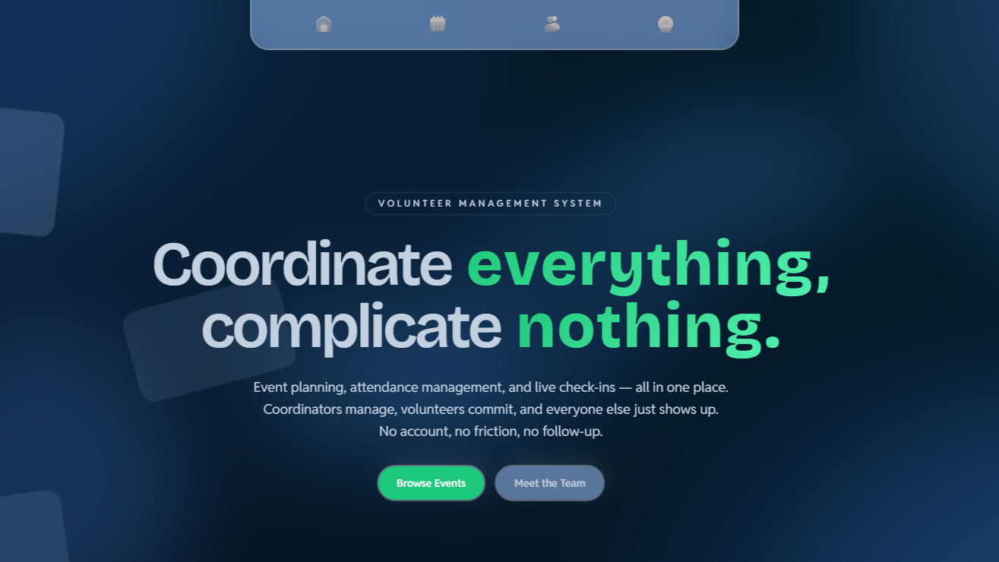
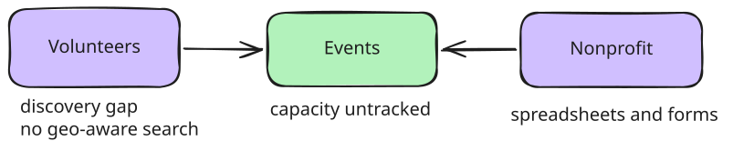
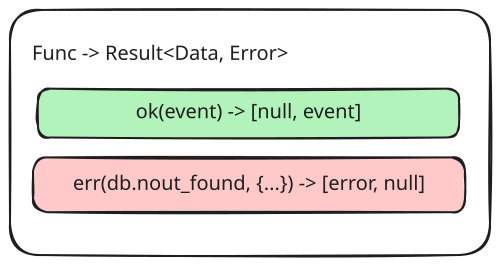
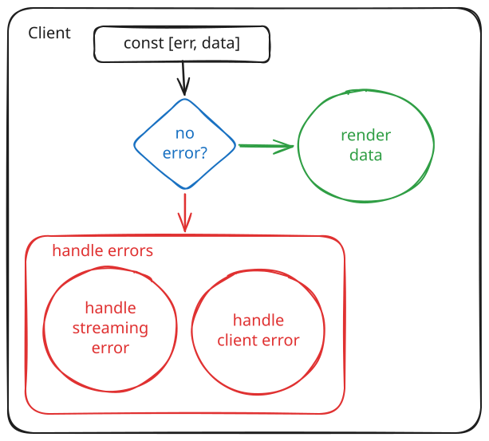
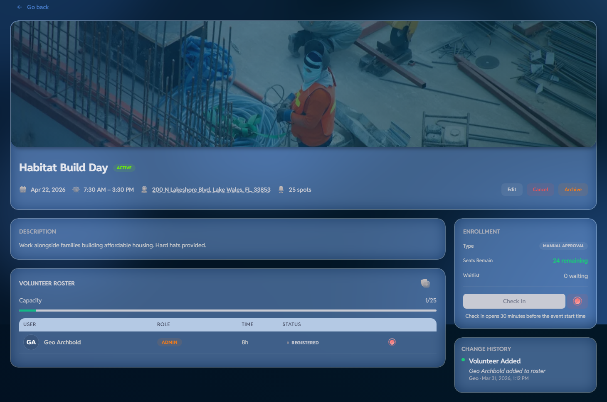

Table of Context
Qrum
Next.js / TypeScript / Supabase / PostgreSQL / PostGIS
Elasticsearch / Kafka / Redis / Grafana / Prometheus / Loki /
Alloy
Preface
Early in my education, while I was still making buttons change colors and learning about time complexities, I desired to obtain a consistent system for measuring my own progress. Initially, I determined that the more I could implement from memory, the more developed I was becoming. With the advent of AI, I began to measure my progress by the number of technologies I could learn or features I could build. If an application functioned and the interface looked polished, I considered it complete. This all changed over the last two years of my professional experience building the ProcECS Engine. It was here that I began to appreciate the sheer scale of building production software, maintaining existing systems, and studying how large-scale applications are designed; I realized that writing code is only a small part of engineering. The more difficult questions revolve around preserving data integrity, designing clear system boundaries, understanding tradeoffs, and building software that remains correct as requirements evolve.
That shift in perspective was what led to Qrum. The project began as a university capstone intended to help a local organization manage its own volunteering events. Events were tracked manually via a disconnected network of spreadsheets and word documents that easily became outdated and were cumbersome to propagate, both internally and to its network of external volunteers. While the original goal was to create a functional application, I saw it as an opportunity to continue exploring the engineering problems that had become increasingly interesting to me. Rather than treating it as an intellectual exercise, I decided to incorporate it into a personal case study where I could experiment with architectural decisions that were common in production systems but often absent from classroom projects.
Each new feature was introduced to solve a specific problem encountered during development. Authorization evolved beyond UI checks into a layered security model backed by PostgreSQL Row-Level Security. Event management became a system of explicit lifecycle transitions protected by database invariants instead of simple CRUD operations. Search progressed from straightforward SQL queries to measured comparisons between PostgreSQL Full-Text Search and Elasticsearch before introducing a change-data-capture pipeline to keep search infrastructure separate from transactional writes. Along the way I added structured logging, observability, deployment automation, and operational tooling, not because the technologies themselves were the goal, but because each addressed a concrete limitation uncovered in discussions with the client and limitations in previous iterations.
This document follows that progression. Rather than presenting the final architecture in isolation, I seek to elaborate on how the system evolved, why each decision was made, the alternatives that were considered, and the tradeoffs that shaped its current design. My goal is two-fold: primarily, I wish to show the reasoning process behind the architecture of a system that I designed and secondarily, but of no less importance, I wish to create a permanent record, for myself and others, to appreciate the hundreds of hours committed to solving these problems; decisions and designs that I can hopefully someday look back upon fondly.
Overview
Qrum is a volunteer management and event-discovery platform. It was built directly with a nonprofit running volunteer programs. During conversations with staff and coordinators, we realized that events were being managed and tracked by hand; whether a sign-up spreadsheet, a separate form for new event or mass emails for changes and alerts, each method provided concrete limitations and no reliable way to answer basic questions about who was confirmed, whether an event was actually full, or what had changed since last week.

After several conversations with the client, we determined that this was less of a limitation of technology than a domain-modeling one. General purpose tools were being asked to represent things they were never built to hold: event lifecycles, capacity limits, roster changes that should show history, and information that was public for some people and sensitive for others. Volunteers, who needed to find something worth showing up for nearby and soon, and staff, who needed to trust that what the system told them was actually true, were both being underserved.
Three groups used the resulting system day to day: volunteers browsing and enrolling, staff coordinators creating and managing events and rosters, and administrators with oversight into log history and user accounts that the other two didn't need.
The approach throughout was to treat these as system invariants, not screens the interface had to display correctly. This case study follows the project in the order its limitations actually appeared, starting from a plain data model that worked at first, through each specific limitation that made it insufficient and finally to the decision that closed it.
The Problem
Every shortcoming traced back to the fact that the tools in use had no concept of the domain they were being asked to manage. A spreadsheet didn't know what an event actually represented, it just held rows; it didn't know an event had a capacity, a state it moved through, or a history worth keeping. What followed was the cost of this absence to the two groups using it daily.
Volunteers
A person interested in volunteering is simply asking, "What's happening near me, soon, that I'd actually want to do?" A spreadsheet or a bare list of every event the organization had ever run didn't answer that efficiently or at all. Requiring a user to call and inquire or having a member of staff log into a system and track down a spreadsheet wasn't efficient or pleasant. The observer was often required to do the filtering themselves. Sorting by nothing in particular, searching by hand, and hoping the address in row 214 was still accurate was not a process that could scale. It failed in smaller ways too. Misspelled search terms returned nothing, an event two states away sat right next to one down the street with no distinction, and there was no way to know whether "full" was current or three days stale.
None of what we discussed was a user's fault. It was the predictable result of using a tool with no concept of geography, recency, or relevance, any of which it was never built to have.
Staff
Failures on the staff side tended to be more painful. A spreadsheet didn't know that an event had a fixed number of slots, so it was content to record the 21st sign-up for a twenty-person shift, and the coordinator only found out when 25 people showed up on Saturday. It could not distinguish a draft event a coordinator was still writing from one that had actually been published, so an unfinished listing went live, or a live one got edited with no warning to anyone already signed up. It had no notion of history either. If a start time changed the week of the event, there was often no record of who changed it, when, or what it said before. And a shared sheet holding volunteer names, phone numbers, and addresses was exactly that, shared, whether or not everyone with access to it should have had it. Let's not even begin to mention the potential liability.
While individually, these may look like small operational nuisances, across a volunteer program running many events with turnover in both staff and volunteers, they had begun to add risk; overcommitted events, silent data loss, and no accountability for changes.
If we examined what actually broke in the stories above, a pattern begins to creep above the bog.
- An event isn't a single fact sitting in a table, it has a life to it. Someone might draft it, publish it, and recall it. The system needs to know the difference well enough to stop the wrong move at the wrong time, not just record the last edit.
- That twenty person shift only stays at twenty if something actually checks the count at the exact moment two people are both reaching for the last spot, not a second before or after. This is classic concurrency.
- Every roster and every event needs to be logged. Knowing that something changed is worthless without knowing what it used to say and who touched it.
- Some of what an event holds belongs out in the open, like the time and the address, and some of it, like a volunteer's phone number or a full roster, doesn't. That split has to hold on its own instead of depending on whoever happened to remember to be careful that day.
- Volunteer searching isn't supposed to require scanning through the whole database. Volunteers might be looking for what is closest and soonest. They shouldn't have to spell it correctly to find it.
![System context diagram with three columns. On the left are the actors. Volunteers browse events, search nearby, sign up, and check in and out. Staff and admins create events, publish or cancel them, manage rosters, and review history. In the center is the system, containing Event discovery, Event operations, and Identity and access. On the right are the domain entities: Events, Addresses, Roster and attendance, Availability, Change log, and Users and roles. Volunteers reach Event discovery by browsing, searching, and enrolling, and reach Event operations by checking in and out. Staff and admins reach Event operations by creating, publishing, and managing events, and reach Identity and access through privileged operations. Event discovery connects to Events and Addresses. Event operations connects to Events, Roster and attendance, Availability, and Change log. Identity and access connects to Users and roles.](../public/d1-light.svg)
The crux of the matter was that volunteers and staff were asking for a system that understood what an event actually was and who needed access to which part of it. Laid out side by side, their paths traced two different doors into the same data store: browsing, searching, and enrolling on one side, creating, publishing, and managing rosters on the other, each reaching only what it actually needed to touch. And so, the system began to take shape.
A Single Database Application
The first version needed to get events in front of volunteers and give staff a way to create them, nothing more. It was built as a React UI inside Next.js, with server actions handling every mutation, and Supabase providing Postgres, Auth, and Storage underneath. Most operations were user-initiated form submissions colocated with the components that triggered them, so introducing a separate REST service at this stage would have added a network boundary and a serialization contract for a problem that didn't exist yet. Code was organized by feature rather than by layer, keeping each domain's queries, validation, and UI in one place as the feature set grew. That organization made it easy to reason about a single flow end to end, but it left open a bigger question: what should happen when a request needed to distinguish an anonymous browser from a staff member?
Structural data-access boundaries
This question motivated an early decision that is worth clarifying. Rather than have a single data client with conditional logic scattered through it, I split data access into two data layers, one authenticated and the other open. Public event browsing and authenticated staff operations went through different paths entirely, so answering "which of these queries runs for an anonymous visitor" was a matter of reading the import graph rather than tracing conditionals buried in a handler. It was a quiet, but helpful structural choice. It also meant that the boundary between public and private data existed in the code's shape, not just in my ability to remember to check a role. Despite the benefits, that boundary only lived in application code, which was exactly the layer that gets forgotten under time pressure and change.
![Architecture diagram in four columns, with arrows flowing left to right. The first column is the browser, holding public event pages, a volunteer dashboard, and a staff dashboard. An arrow leads from the browser to the second column, the Next.js app, which holds server actions and route handlers, feature modules, and the React UI. From server actions and route handlers, two arrows branch out to the third column. A red arrow goes up to the auth data layer, which is drawn in red, and a black arrow goes down to the open data layer. Both layers then point into the fourth column, a dashed green boundary labeled Supabase. The red arrow from the auth data layer and the black arrow from the open data layer both land on a database cylinder containing events, addresses, user_event, event_change_log, and roles. Also inside the Supabase boundary are Supabase auth, PostgreSQL, and BLOB storage.](../public/d1_v1.svg)
For this iteration, topology was never going to be the interesting part. The more interesting portion was what this topology could and couldn't guarantee on its own.
Sufficiencies and insufficiencies
For a single-database CRUD product, this architecture was
correctly simple. This is worth saying explicitly because the
temptation in a project like this is to skip straight to the
interesting infrastructures that can solve more nuanced
problems. Writes were durable and transactional. Postgres was
the right tool, and it stayed the right tool through everything
that came after. What this version couldn't do was guarantee
anything about who was allowed to see or touch what. Every
permission check lived in application code, which meant the
actual security posture of the system was "remembered
everywhere." It wasn't backed by policy and was brittle, and it
was the first thing that had to change. Another tradeoff worth
mentioning was that server actions in Next.js simplified
colocated product development, but public HTTP boundaries were
still useful where clients needed URL-driven, cacheable, or
independently testable behavior. That was exactly why search
later became
/api/search rather than an
action.
Authorization at the Application and Database Layers
Getting the shape of the request paths right didn't answer the harder question sitting underneath it. Once a request could be correctly routed as public or authenticated, something still had to enforce that distinction, and application code alone was never going to be that something.
Threat model
Having experience with application enforced authentication and authorization, I understood that the most likely threat here was a forgotten check or incorrect import by a new teammate, not a sophisticated attacker. One new server action that queried events without filtering by role, and volunteer contact details could become readable by anyone holding a session token. UI-level gating made this worse, not better, because hiding a button doesn't hide a row. If the data was still reachable underneath, a hidden button was just a lock with no door attached to it.
Roles in the access token, and application RBAC
The solution was simple straightforward. Role claims got written into the user's JWT metadata through a custom access token hook, so every request already carried its own authorization context without a separate lookup. Server actions checked those roles before doing any work, which produced fast, specific failures. A volunteer attempting a staff mutation got a clear error back instead of a quiet empty result set. While that was an improvement for anyone using the system, it did nothing for the request that skipped the check entirely.
PostgreSQL Row-Level Security
We reached for RLS to achieve defense in depth with what native Postgres could provide. The same JWT claims that the server action already checked got evaluated again, this time by the database, against the actual rows being touched. Public event fields stayed broadly readable while rosters, contact details, and draft events were restricted by policy instead of by convention. The property that mattered was what happened when the application layer forgot. The database still refused. Authorization lived where the data lived, so it applied to every path that could reach that data.
![Sequence diagram set inside a dashed box labeled Trusted server and db boundary, with lifelines for User, Supabase Auth, NextJS Server Action, App RBAC, PostgreSQL RLS, and Database. The User signs in to Supabase Auth, which runs a Custom Access Token Hook to mint an access token and add user roles, then returns a JWT to the User. The User sends a privileged action carrying that JWT to the NextJS Server Action, which calls App RBAC to verify the role. Two labeled outcomes branch from that check: a green role-allowed path continues into the boundary, and a red else path returns a clear application error straight back to the user, marked by a callout reading Better errors and early rejection. On the allowed path, the Server Action sends a policy evaluation with the JWT claims to PostgreSQL RLS, which asks whether the policy permits the row. A green outcome proceeds to the Database and commits; a red else outcome has the database reject the operation instead, marked by a second callout reading Actual enforcement boundary.](../public/d4.svg)
So we arrived at two almost identical failure paths, and while they looked almost identical from the outside, they caught different things. One stood in for every check a developer might forget to write. The other was what happened regardless of whether that check ever got written at all.
Why both layers existed
"But," I heard you ask, "why not consolidate the application's authorization checks with the RLS policies instead?" An excellent question, dear Reader. Allow me to elucidate.
A plain RLS policy can't carry a custom message on its own, a
failed USING or WITH CHECK clause
always returned the same generic violation regardless of table
or policy. This could be solved with a trigger or
security-definer RPC that raises its own exception with a
specific message, so some of that specificity could come back
without technically leaving Postgres. What couldn't come back
was the cost. That check would still only fire after a request
had already consumed a connection and query-planner work, and at
scale that would be capacity spent rejecting traffic that was
never going to succeed, capacity legitimate requests were
competing for. A role check in memory rejects the same request
for close to nothing. And the client still needs something to
catch that database error and translate it into language a user
understands. Thus the app layer's responsibility changed from
deciding whether an action was allowed to explaining why it
wasn't.
| Approach | Benefit | Failure mode |
|---|---|---|
| UI checks | Simple UX | Not security |
| App RBAC | Early failure, clear errors | One missed endpoint bypassed it |
| RLS | Hard data boundary | More policy complexity |
| RBAC + RLS | Defense in depth | Rules existed in two places |
The honest cost of defense in depth is duplication. A rule change meant touching application code and a policy both, and the two could drift out of sync with each other. I accepted this cost because the failure modes weren't equally bad. Drift between the two layers produced a confusing error message, something a developer noticed and fixed. A missing check with no backstop produced a data leak, something a developer might not notice until someone else already had.
Once authorized users could actually mutate events, a different question opened up. Did those mutations preserve the domain's rules once retries and concurrent requests entered the picture?
Concurrency Considerations
While authorization decided who was allowed to touch an event, there was still the matter of whether the event itself made sense once they had. Publishing an event with no location, inserting an enrollment twice by a retried request, and changing a start time with no record of who changed it were all things an authorized, correctly permitted user could still do to a system that had no opinion about what a valid event looked like. Thus, this was the malady that the next iteration sought to remedy. An event had to be treated as something with enforceable rules to it.
Event state transitions
Picture an event with a status column; because it is just text, anyone with the right permission could set it to whatever they wanted. That sounds fine until you actually consider that it allows a coordinator, halfway through writing a draft event, to publish an event that is missing a location and date. It would go live exactly as broken as it was mid-edit. An event that got cancelled last week could get flipped back to active by a stray click, with nothing checking whether that was even a sensible thing to do. The column itself has no awareness of the difference between a deliberate, valid change and a mistake. It just stores whatever it is told. To a sharp reader, this may have seemed obvious: business objects must be governed by business rules. This instinct is correct, but there are so many ways to pave this road. How should it be done?
The fix was built by rephrasing the question entirely. Instead of asking "what does the client want this field to say," the system asks "does this row actually satisfy what the target state requires?" Publishing stopped being a simple edit. It became a transition. Transitions only succeed if the event clears whatever that specific move demands. The client is no longer trusted to set status and instead becomes something the system produces, the output of a move that the server has to validate. The client could only be trusted for basic input validation, and even then the server has to verify.
Enrollment and attendance
The naive version would have been to split a single relationship across multiple places. Sign-ups could live somewhere and attendance somewhere else entirely. But then the system could have two records that were both trying to describe the same data: whether this volunteer was coming to this event. Because of this independence the two records could disagree with each other. A volunteer could show up and get checked in on the attendance side while the sign-up record still said they'd never enrolled at all, or a cancelled sign-up could have left a stray attendance row behind it with nothing to explain where it came from.
The actual problem underneath wasn't really about tables. Sign-up and attendance were two snapshots of one evolving relationship between a volunteer and an event, and splitting that relationship into two records would have meant that the system had two places that both needed updating every time something about it changed. And God have mercy on me if I missed one of those updates. The two records could have happily stop agreeing with each other, with nothing in the schema itself to catch it.
So enrollment moved into one place, user_event, a
join between a volunteer and an event rather than a field bolted
onto either one. Checking in and checking out extended that same
row instead of getting a table of their own. Signed up, showed
up, and left all became states of one relationship, something
that had to stay consistent in exactly one place. That single
source of truth was also what made the next problem answerable
at all. Capacity was just a count against one table.
Append-only history
If the event row only ever held the current value, an ordinary update would erase whatever was there before it. The date would change, and there was no way to say what it used to be or who changed it. That was fine right up until it wasn't, usually the week something actually went wrong and a coordinator needed to know exactly that, or worse, wished to revert to a previous valid state.
Thus every meaningful change got written to a changelog that sat apart from the event itself. The event row answered what was true right now. The changelog answered how it got there. The moment history lived in the same row as the current state, an ordinary update could overwrite it. The only caveat was that there would be a requirement for clearing entries after some configurable amount of time had passed.
Preventing duplicate event creation
There were a host of issues that could result in duplicate requests being sent to the server: a double click, a flaky connection, an optimistic retry firing twice, or an impatient user spamming a button to watch it go brrr. If creating an event just meant inserting a new row, each of those retries made a new event, and now there could be two identical listings for the same shift.
As with most problems, the solution was multilayered. Before the request leaves the browser, the client generates a UUID up front and that ID became the row's identity. A retried request carrying this idempotency key would collide with the row that already existed instead of making a second one. Coupled with client-side debouncing with the Tanstack Pacer library, a simple yet robust solution to performance and result fidelity was achieved. It was cheaper to make duplication impossible at the identifier level than to go looking for duplicates after the fact.
Capacity under concurrency
Say an event had exactly one slot left, and two volunteers hit enroll within a few milliseconds of each other. The obvious approach would be to check the current count before inserting, and if it was under the limit, let the enrollment through. While this could work, there was a classic check-then-change issue. The edge case that failed occurred when both requests could read that same "one slot left" state before either one had written anything. Both checks would pass. So both inserts would occur. The event would now have twenty-one people signed up for twenty slots, and nothing in that flow had technically done anything wrong. While this may not have been a likely or common issue for our client, it was worth the mental exercise, especially when the solution was simple.
The application-level check simply couldn't see the other request while it was making its decision. The only place that was actually true was inside the database, at the moment of the write itself, so that was where the check had to live. So I made the server execute an atomic transaction for the update. The first request through succeeds and the second one gets rejected with a clear capacity error instead of quietly overbooking the event.
![Sequence diagram titled Concurrent Enrollment Sequence, with five lifelines across the top: Volunteer A, Volunteer B, NextJS, DB, and Capacity trigger. Volunteer A is drawn in blue and Volunteer B in orange, and their messages follow those colors. Volunteer A signs up, then Volunteer B signs up. NextJS reads capacity for A, then reads capacity for B. A note reads that both requests may observe a single vacant position. NextJS then inserts a user_event row for A, followed by a user_event row for B. The capacity trigger fires before insert. It allows the first insert, so A receives enrolled. It raises a capacity exception on the second, so B receives event full.](../public/d4-concurrency.svg)
The application check gives a volunteer a friendly "this event is full" instead of a raw database error. It just wasn't the thing actually holding the limit. That distinction, a check for user-experience sitting on top of a check for correctness, was the same one that showed up with authorization, and it showed up again here for the same underlying reason: anything that only runs in application memory can be raced, and anything that runs inside the write itself cannot.
Correct event operations solved the coordinator's side of things, but discovery hadn't been addressed. Volunteers could still only browse a flat list, with no sense of what was actually near them.
Move Geographic Computation into PostGIS
The question that every volunteer asks is, "What events are happening near me and soon?" A flat list of every event ever created wouldn't answer it. Correct event operations had solved the coordinator's half of the problem, leaving us to solve the discovery portion with the next iteration.
To illustrate, we started with the simplest version of the problem. A staff member typing in an ordinary street address into a form, and it being stored as a plain text field on the event. This field can be searched against when a volunteer looks for something nearby.
This process failed immediately. Since the address was just a string to the database, there was no concept of where it actually sat in the world. It had no way to answer for proximity because that was a geometric question and text has no geometry. Matching became exact matching, or something close to it. Even with fuzzy matching, a volunteer searching in Jacksonville wouldn't surface an event with a city listed as Jax, nor would one that was two blocks away in a neighboring zip code the search term never mentioned. There is no radius, distance, or ordering by closest first. The system could only tell you whether or not an address contained a substring. It couldn't tell you whether an event was five minutes away or five hours away.
Getting an actual latitude and longitude out of that address meant somewhere, that address needed to become coordinates the database could query against. One approach could be calling a geocoding provider during the create flow, waiting for coordinates, and only then saving the event.
However, this approach had some serious downsides. The event creation process was dependent on some third-party API's uptime. If Geoapify was slow, event creation was slow. If Geoapify was down, event creation was down. For a feature that had nothing to do with geography, this would tightly couple the two services. We could do better.
Geocoding, without blocking event creation
So I decided to save the address row immediately, on its own, as part of the same request that created the event. The external geocoding call happened outside that path entirely. If the provider was slow or unreachable, the event still got created. It simply wasn't geo-searchable yet, and it picked up coordinates the moment the geocoding call succeeded, whenever that completed.
![Sequence diagram titled Storing Location, with five lifelines across the top: staff event form, NextJS server action, PostgreSQL, Geoapify, and PostGIS. The staff event form sends a street address to the NextJS server action. The server action saves the canonical address to PostgreSQL. It then makes an async geocode call to Geoapify, drawn as a dashed arrow. Geoapify returns a latitude and longitude to the server action. The server action then sends an update address location message across to PostGIS.](../public/s5.svg)
Although the time between saving the address and resolving its coordinates may only have been a few seconds, it had to be accounted for. Even an event created just before the geocoder went down still got created and showed up in every list that didn't depend on location, while it patiently waited its turn to become searchable by distance. Nothing about event creation itself ever noticed the difference.
Geography points and spatial indexing
So we had coordinates, but that alone didn't answer "what's near me?". A latitude and a longitude were just two numbers sitting in two ordinary columns as far as Postgres was concerned, and a plain database had no built-in idea of distance between two pairs of numbers, let alone a fast way to find every row within some radius of a third pair. Getting proximity search meant the database needed to actually understand geography as a concept, and that was exactly what PostGIS was for.
PostGIS is an extension to Postgres that adds spatial types and
the functions and index structures that go along with them.
Through a simple installation, a column could hold a geography
point instead of two disconnected floats. A geography point,
unlike two floats, knows that it sits on the surface of a
sphere. Instead of treating latitude and longitude like flat
x and y coordinates on a flat plane,
distance between two points automatically accounted for the
earth's curvature.
Knowing what a point was didn't make searching using it fast on its own. That's what the GIST index is for. The GIST index that PostGIS added alongside the type wasn't an ordinary btree index built for comparing single values against each other. This index allowed Postgres to narrow a spatial query down to a small set of candidate rows instead of checking every row in the table one at a time.
Finally there was ST_DWithin, the function that
actually asks and answers the question our patient volunteer
cared about. Called on its own it would need to compute the
distance between every event and the search point, one row at a
time. However, called against a geography column that had a GIST
index, it could use that index to rule out almost everything up
front and only do the distance math on rows that could plausibly
qualify. Ordering the results by closest first worked similarly,
using the index rather than a separate calculation after the
fact. The best part was the speed, with both returning in
single-digit milliseconds even against a table with millions of
events in it, thanks to the spatial query itself only ever
answering which events qualified. Full event data still loaded
through the same canonical data layer as everything else, so the
geography logic stayed isolated to the one job it was optimized
for.

A volunteer's location and radius go in, the GIST index narrows
the field before ST_DWithin ever has to do the
distance math on it, and what comes back is already ordered
nearest first, with the canonical layer supplying the actual
event data at the end. None of that work touched JavaScript at
any point.
Why have the database perform the calculation
The alternatives were worse in specific ways. Computing Haversine distance in JavaScript meant fetching candidate rows to filter them in application memory, and the database couldn't use an index for a predicate it never saw, so this degraded with row count rather than with result count. A dedicated geographic service would have added a network hop and a synchronization problem to solve a query Postgres already answered. Storing bare latitude and longitude columns without a spatial type would have given up the index and the correctness of geodesic distance in one move.
With the addition of PostGIS to our database answering the geographic filtering issue, we could move on to keyword searching. Keyword search still treated every text match as equivalent, with no typo tolerance and no way to combine distance, recency, and relevance into a single ordering. On to the next iteration.
From String Matching to Search Engineering
Search started as
WHERE title ILIKE '%query%' OR description ILIKE
'%query%', about as simple as search got. However, I realized that no
index could serve a leading wildcard, so as the events table
grew, every search meant scanning rows one at a time. While this
was fine with smaller datasets, there was also no typo tolerance
and no ranking beyond whatever order the rows happened to come
back in. I pointed out to the client that a volunteer searching
for "beach cleanup" could miss an event titled "Cleanup Day"
over a mismatched word buried in a longer description, with no
way for the system to say one result mattered more than another.
The standard way to get fuzzy and partial matching inside Postgres was to incorporate trigram indexes. And this showed promise! Users could power through typos and substrings started matching. While trigram indexes carry write overhead at scale to keep updated on a table that is constantly being written to, at the scale our client was expecting, this would have been a nonissue. What wasn't addressed was ranking.
A trigram is a similarity measure between two strings using any overlapping three-character chunks. Whilesimilarity()sounds like ranking on the surface, it isn't.pg_trgmdoesn't know what a word is; it operates purely on character sequences, so "the beach" and "each teach" share a meaningful chunk of trigrams despite one having nothing to do with the other. No meaning is captured.
So I reached for full-text search. FTS felt like the right tool, providing generated tsvector columns and a GIN index. What's more, it was built specifically for ranked text search inside Postgres with relevance scoring and an index. While this meant that we would no longer require hand-rolled scanning, it also meant that we would lose any meaningful typo tolerance, partial word matching, and there was no native, planner-optimized way to combine text relevance with something like distance or recency into a single ordering without hand-rolling an expression the indexer can't help with.
So I considered the nuclear option. I was familiar with Elasticsearch: an external, dedicated search engine that tokenized every entry and built an inverted index that provided typo tolerance, partial word matching, and combined multiple signals like text relevance, distance, and recency into a single ranked score, and did it fast...extremely fast. With it being a whole separate service to run, keep in sync, and operate, I understood that it was a heavy answer to reach for, especially for a volunteer application that, at this point, was still mostly a CRUD app with a search box. Reaching for it would mean adding considerable infrastructure and hefty operational weight.
Wanting a tool and needing one are different claims and claiming that Postgres was too slow was a claim I wasn't willing to make without a way to actually test it. So before touching Elasticsearch at all, I built a benchmark, something concrete enough to either justify that weight or rule it out.
Controlled performance harness
With the help of Claude, I generated one million synthetic
events and 100,000 addresses in a self-hosted Supabase dev
database, with deliberately controlled term frequencies, food at
56%, shelter at 5%, watershed at 0.5%, pollinator at 0.1%, and
one term that never appeared at all, so I could measure how each
backend behaved across selectivities rather than at one
arbitrary point. I used Postgres 15.8, tuned with
shared_buffers=4GB,
effective_cache_size=12GB,
work_mem=32MB. All numbers were warm-cache medians
of repeated runs under EXPLAIN (ANALYZE, BUFFERS).
Three Postgres backends were compared against Elasticsearch across six query shapes: ILIKE with a forced sequential scan, pg_trgm GIN indexes on title and description, and a generated tsvector column with a GIN index.
Testing results
Unsurprisingly, Postgres full-text search bested every other Postgres option across the board: roughly 5× faster on dense matches, and by four orders of magnitude on the nonexistent term.
It was noteworthy that pg_trgm
scarcely engaged. The planner reached for it only on the
nonexistent term, and even then reluctantly. At 0.5%
selectivity, it preferred a plain sequential scan with early
exit to the bitmap-index-plus-heap-recheck path a trigram index
would have demanded. I wanted to know why.
The planner, after all, is cost-based. When given a
LIMIT 50 and no ORDER BY, Postgres can
early return the moment it gathered fifty matching rows. Thus it
didn't need to see the remainder of the table at all. The search
term, "watershed", sat at roughly one row in every two hundred,
so a plain sequential scan, reading pages in their natural
order, ran into fifty matches after only a small slice of the
table.
The trigram path afforded no such shortcut. A GIN index over trigrams yielded a bitmap of candidate pages, but because trigram matching was prone to false positives, every candidate still had to be rechecked against the actual row before it could be trusted to match. At 0.5% selectivity, those matching rows were not clustered but scattered fairly evenly across the whole table, so the pages containing even a single match came to cover nearly as many pages as the table possessed in total. Building that bitmap, walking it, and rechecking each candidate row one by one ended up costing more total work than the sequential scan's early exit did, notwithstanding an index sitting right there waiting to be used.
Knowing this, we could see the required shape for when a trigram index actually paid for itself. For a term that appeared once, or not at all, matching rows were rare enough to be genuinely sparse, and so the index could skip almost the entire table rather than touch nearly all of it. Our search term of "watershed" was rare enough on its face, but not rare in that particular sense.
ORDER BY defeated every index alike, which
surprised me. Returning the top fifty by date required
evaluating every matching row first, so neither scan type was
permitted to exit early, regardless of what index sat beneath
it. FTS's advantage on that particular shape came almost
entirely from a cheaper per-row check since it uses a token
match against a pre-tokenized vector rather than
character-scanning raw text.
Finally, I tested a realistic production query. I selected the
search term "food", along with a 25 km geo filter around New
York City, ordered by event_date, with a limit
fifty. Here were the results.
| Backend | Query |
|---|---|
| ILIKE | 1962 ms |
| Postgres FTS | 380.87 ms |
| Elasticsearch | 20 ms |
ILIKE came in at nearly two full seconds, slow
enough that a volunteer would notice and begin to wonder whether
the page had broken outright. FTS brought that down
to 381 ms. While this was definitely an improvement that a user
could live with, it would still feel sluggish on a slower
connection or with high volumes of traffic. Elasticsearch landed
at 20 ms, blazingly fast as expected.
Interpretation and conclusions
Postgres FTS was not a failed design; I want that said outright before going any further. It brought the realistic query down to about 381 ms. Most companies never engage enough users to every worry about read/write query latency. "Postgres can't handle this" was not the claim I sought to make, and this was confirmed by the benchmark.
So the case for Elasticsearch never truly rested on speed at all. It rested on capability, with latency relegated as a final reason rather than granted the first.
| Reason | Where Postgres FTS fell short | What Elasticsearch did instead |
|---|---|---|
| Typo tolerance | missed voluteer to volunteer entirely |
multi_match with
fuzziness: AUTO caught it without effort
|
| Partial-word search | missed volun to volunteer, with no clear path to closing it | matched directly on partial terms |
| Multi-signal ranking | combining geo distance, recency, and text relevance meant hand-rolled SQL the planner optimized poorly |
function_score did exactly that natively
|
| Write amplification |
a tsvector column plus GIN indexes meant four
or more index updates on every write, on the transactional
database, purely to serve reads
|
search indexing happened on a separate system entirely |
| Latency | 381 ms on the realistic query | 20 ms, about 19× faster |
Of the five, multi-signal ranking was probably the one that mattered most. The other four could become issues as the number of users increased, but this was the one genuinely hard to fake inside Postgres, short of writing and maintaining a pile of SQL the planner was never going to optimize well in the first place.
What the measurements didn't prove
I find it worth stating plainly that I was aware of several glaring limitations to my testing. Because I created a synthetic dataset that was built around five controlled terms and not Zipf distributed user text with far more genuinely rare words in it, I realize the planner was likely to favor the indexed backends more than this test showed.
![Two-part figure comparing four search approaches. The top row holds four cards. ILIKE is simple, has no ranking, no typo tolerance, and expensive scans. pg_trgm supports partial matching, has large indexes, and the planner often avoids it. Postgres FTS offers tokenized search and a strong Postgres baseline, but limited fuzzy behavior and ranking that becomes complex. Elasticsearch offers fuzzy multi-match, geo and recency scoring, and a dedicated search index, at the cost of added operational complexity. Below is a horizontal bar chart of query latency for three of them. ILIKE is the longest bar at about 1950 milliseconds, Postgres FTS is about 400 milliseconds, and Elasticsearch is the shortest at about 20 milliseconds. A note beneath reads that the performance harness used 1 million events and 100 thousand addresses.](../public/d6.svg)
Every figure here was only single-query latency. Throughput and
p99 under concurrency were never measured nor was a k6 load test
performed. Elasticsearch, too, capped hits.total at
10,000 by default, while EXPLAIN ANALYZE counted
everything, so the totals were not strictly comparable even
though both servers were performing the same
find-and-return-top-50 task. Nor was the write-latency cost of
the added Postgres indexes ever measured directly. The relative
comparison between backends was the part carrying significant
weight here; thus, take the absolute millisecond figures here as
merely approximations.
A Derived Search System
Elasticsearch had earned its place on capability, not speed, but that verdict left an open question sitting right underneath it. Every earlier iteration had been built around treating Postgres as the one place authorization, capacity, and history could be trusted. Adding a second datastore for search required me to plan on how that second store would reconcile changes without becoming a second source of truth.
Writes committed only to Postgres
The naive approach was to implement dual writes. The server would write to Postgres, then write the same change to Elasticsearch, both inside the same request. On the surface that sounded fine, but what would happen if one of the two calls failed on its own? Say if the Postgres commit succeeded and the Elasticsearch call timed out. Now the two systems would disagree with each other and there would be no record of which one was correct. Retrying wouldn't fix that cleanly either, since a retry after a partial failure could just as easily create the opposite kind of mismatch.
So I decided that the application would never write to
Elasticsearch directly, instead, it wrote to Postgres exactly as
it always had, with no dual write and no awareness that a search
index even existed. The pipeline would read what Postgres was
already producing on its own, the write-ahead log, before
Postgres considered it durable. That log would let the database
survive a crash, since it could replay anything that was written
but never applied. Debezium was used to tail that log through a
logical replication slot and published each change as a JSON
message to a topic in Redpanda, a Kafka-compatible broker. A
small consumer I called the indexer would read those messages
one at a time, joined in the address row to pull geo
coordinates, normalize a few field types, and upsert the result
into Elasticsearch. Deletes arrived the same way, as a rewritten
record carrying a
__deleted flag, and become a delete on the
Elasticsearch side. End to end, a Postgres write showed up in
search in under a second.
That was the whole point of building it this way. Redpanda could go down, Elasticsearch could catch fire, the indexer could crash, and event creation could still be relied upon to stay online. The only casualty was how fresh search results were. This tradeoff in correctness was one that we agreed that we could accept.
This was raw table CDC, reading the events table directly, rather than an outbox pattern where the application would write an explicit change record as part of its own transaction. Outbox was the more production-correct answer at scale, since it decoupled whatever was consuming those changes from the table's actual schema. With exactly one consumer that I also owned, raw CDC stayed simpler and that coupling cost nothing yet. It was a tradeoff worth revisiting, and I come back to it later when talking about what I'd change if I did this again.
![Change data capture pipeline diagram. The NextJS app sends inserts, updates, and deletes to PostgreSQL, which sits inside a green dotted boundary labeled canonical transaction layer. A red dashed arrow from the app directly to Elasticsearch is struck through with a large red cross and labeled no synchronous dual writes. Postgres commits to the write-ahead log, which reaches Debezium by logical replication. Debezium emits a CDC event to a Redpanda topic. An indexer consumes from that topic ordered by event_id and upserts or deletes documents in the Elasticsearch index named events_v1, which sits inside a purple dotted boundary labeled disposable derived search index. The indexer also performs an address lookup back against PostgreSQL. A note beside the indexer lists its work: join geo data by address_id, convert Debezium date integers, extract latitude and longitude, and handle deleted records.](../public/s7.svg)
That's the whole mechanism for getting a change from Postgres into the index. What Elasticsearch actually did with that data once it arrived, deciding which result to show first, was a separate problem entirely.
Elasticsearch ranked, Postgres hydrated
Getting text into an index solved matching. It didn't solve ordering, and ordering was what a volunteer actually cared about. A query for beach cleanup shouldn't just return every event containing those words, it should put the one happening this weekend, five minutes away, ahead of one happening next month on the other side of the state.
The live query used something Elasticsearch called
function_score, which took a base relevance score
and layered additional factors on top of it. Matches inside the
title counted twice as much as matches inside the description.
The thought process behind this was that it was more likely that
someone typing "beach cleanup" into the search box was more
likely describing what an event actually was than mentioning it
once somewhere inside a longer paragraph. The same fuzziness
setting that caught typos during the benchmark carried straight
through into this query too.
Recency and distance both got applied as Gaussian decay, instead of a hard cutoff that treated everything past some line as equally irrelevant. For recency, the center was right now, so an event scored highest today and decayed gradually the further out it was scheduled, tuned to a two week scale. For distance, the center was wherever the volunteer was searching from, and coordinates entered that formula only when they were actually present, without ever falling back to some invented default location.
Take an event happening three months out, somewhere far away. If the geo decay and the recency decay both multiplied straight into the text score, that event would get hit by both penalties at once, crushing its score by more than either one deserved on its own. Summing the two signals together first, then multiplying that sum against text relevance, meant a far and late event only paid for being far and late once instead of paying twice over for the same two facts.
Two smaller choices are worth delving into. City and state stayed out of the searchable text entirely, kept as filters and metadata instead. Letting a search box match directly against a state name would have surfaced every event in Florida the moment someone typed Florida, regardless of whether any of them were actually relevant to what that person was looking for.
Here was what that produced for "beach cleanup", searched from Jacksonville. Three Jacksonville events led, with scores dropping from 22.5 down to 16.1, ordering among them driven by recency once distance had already put them in a tight cluster. Then a cliff down to 2.62 for an event in Huntsville, roughly 600 kilometers out, trailing off to 0.03 for one in New York, where both distance and time were working against it at once.
Ranking only ever went one direction after that. Elasticsearch handed back an ordered list of ids and scores while Postgres supplied the actual rows for those ids, rendered back out in whatever order Elasticsearch had decided on. An id that no longer existed just got dropped from the results, and any mismatch between the two counts surfaced as a warning instead of failing silently. Detail pages and edit forms skipped Elasticsearch entirely and went straight to Postgres, since Elasticsearch's job started and ended at deciding order. Nothing about what a volunteer actually saw on the page was allowed to live in the index alone.
![Diagram of two read paths. Along the top is the search path. Browser search sends a query with latitude and longitude to slash api slash search, which issues a function_score request to ES. A side note lists what that scoring covers: text relevance, geographic decay, and recency decay. ES returns ranked event ids as UUIDs and scores. Those ids go to PostgreSQL as a where id in query, which returns canonical event data back to slash api slash search, labeled preserve Elasticsearch order, and the response returns to the browser. A side note reads that this path allows discovery and ranking events. Along the bottom is a dashed boundary labeled direct canonical read, containing event detail and edit connected by a two-way arrow to the NextJS data layer, which reads and writes PostgreSQL directly. Side notes read: read or mutate exact records, and browse with no search query. PostgreSQL is annotated as the source of truth for status, capacity, deletion state, and relations.](../public/d8.svg)
That split, one system deciding order and another supplying the truth, only covered how a search actually worked. It said nothing about the paths that never touched Elasticsearch at all, event detail, editing, or browsing without a query, all of which read straight from Postgres. Which path a request took, and how fresh it needed to be, turned out to depend entirely on what a person was doing.
Consistency, chosen per workflow
Every write now had to travel through Debezium, Redpanda, and the indexer before it showed up in search, and that trip could take a non-trivial amount of time. I wondered whether this actually mattered. The answer turned out that it depended entirely on what a user was doing.
| Workflow | Consistency requirement | Source |
|---|---|---|
| Search discovery | A short delay was fine | Elasticsearch ranking, Postgres for the rows |
| Event detail | Whatever was true right now | Postgres |
| Event edit | Had to reflect your own change immediately | Postgres |
| Browsing without a query | The full canonical list | Postgres |
If a user edited an event and searched for it right away, the change might not show up for about a second. I was okay with this since search ranking was only ever an ordering heuristic, never the place anything about an event's actual state got decided. Whatever a volunteer saw about an event itself, its status, how many spots were left, whether enrollment was even open, always came straight from Postgres, where it was correct the instant it changed. Empty or very short searches fell back to the ordinary Postgres-backed browse grid entirely, so looking at everything never touched the index at all.
Underneath all of it sat one invariant the whole design depended
on. The index had to stay disposable, rebuildable from Postgres
at any moment, because nothing lived inside it that didn't also
live in the database. One statement was enough to prove it.
UPDATE events SET updated_at = updated_at;
Since even a change that updated nothing still got written to
the write-ahead log and flowed straight back through the same
pipeline, rebuilding the index from nothing.
That pipeline also meant there were now several independent services that could each fail on their own, which was exactly where thinking about failure needed to start.
Failure Modes Are Part of the Architecture
Five services meant five separate things that could each go wrong on their own. I wanted to be careful to not overengineer without justification and having this many failure points was cause for reflection. I reason that this was acceptable and not reckless since every one of those failures had a bounded, known consequence.
| Failure | User-visible effect | Data loss? | Recovery |
|---|---|---|---|
| Indexer down | Search went stale | No | Resume from consumer offset |
| Elasticsearch down | Search unavailable | No canonical loss | Indexer retried; queue drained |
| Redpanda down | CDC couldn't advance | No immediate loss | Broker recovered, Debezium caught up |
| Bad indexer code | Wrong search documents | No canonical loss | Fix, drop index, re-PUT mapping, reindex |
| Postgres down | Application unavailable | Core dependency | Database recovery |
Kafka consumer offsets were what made most of this table predictable instead of worrisome. An indexer restart would resume exactly where it left off, since the offset would mark the last message it actually processed, while a bad transformation would be recoverable because the source of truth was never touched. Treating Postgres as canonical and Elasticsearch as disposable would be the reason a broken indexer was a fix-and-reindex problem instead of a data-recovery problem.
One failure mode on this list wasn't like the others, and it was the one that actually worried me. Postgres wouldn't garbage-collect its write-ahead log past the point a replication slot had confirmed it was read. That was normally invisible, since Debezium was usually keeping pace and confirming as it went. But if the indexer went down for a week, Postgres would just keep holding onto a week's worth of WAL, waiting for a consumer that wasn't coming back anytime soon. Disk could fill causing the database to stop dead. And there would be no smoke in the path of this fire; search going stale would read as a minor, cosmetic problem right up until Postgres ran out of space. Replication slot lag was the one metric I actually wanted an alert on, and the only thing in this system that deserved to page me at 3AM. Why? Because healthy looked like an active slot with lag measured in kilobytes.
![Failure mode diagram for the change data capture pipeline. Across the top, a green box states that canonical data remains recoverable, connected down to a row of five pipeline components: PostgreSQL, Debezium, Redpanda, Indexer, and ES. Four brown boxes below describe failure scenarios, each connected to the component it concerns. Indexer unavailable: consumer offset retained, restart resumes processing, search becomes stale. Elasticsearch unavailable: postgres writes continue, indexer retries, search is unavailable or stale. Redpanda unavailable: debezium cannot publish, replication-slot lag increases, pipeline catches up after recovery. Bad indexer deployment: fix transformer, drop and recreate indexes, reindex from pg. At the bottom, a red box warns about replication slot lag, noting that unconsumed WAL accumulates until the Postgres disk is exhausted.](../public/d9.svg)
Four rules came out of this architecture with each one existing because I could point to how ignoring it could turn into an incident.
- Elasticsearch never got exposed publicly. The application was the actual auth boundary here, and Elasticsearch's wire protocol was rich enough that proxy-level auth alone usually wasn't enough to trust in front of it.
- The application never wrote to Elasticsearch directly. Every write went to Postgres and propagated from there.
- Nothing lived in the index that didn't also live in Postgres. If it couldn't be reconstructed from the canonical data, it was gone the next time the index got rebuilt.
- Documents never flowed before the mapping was in place. Elasticsearch's dynamic mapping could fail silently and guess field types, and by the time that is noticed, it could already be wrong in production.
Every failure mode above was something the system did to itself. The current assumption was there was good faith on the other end of the wire, where users would make requests that ran into broken infrastructure. This assumption would no longer hold when considering the edges of the application that were being exposed to the internet. Login, enrollment, and search are all public surfaces, and nothing in the table above would have anything to say about what happens when one of those surfaces gets hit far harder and faster than any legitimate user ever would. This failure type needed its own layer standing in front of it.
Rate Limiting as an Operational Control
Authorization had already answered who was allowed to do something, but it said nothing about how often they were allowed to do it. This could become an issue. A legitimate volunteer accidentally hitting enroll twice would be harmless. A script hitting the login endpoint a thousand times a minute would not, and nothing in the RBAC or RLS layers from earlier was ever designed to notice the difference. The question of how fast needed its own answer.
Why fixed windows weren't enough
One of the simplest rate limiting methods is counting requests in a fixed window, say sixty seconds, and rejecting anything past some threshold within that window. It is easy to reason about and easier to implement. It also has a specific, exploitable hole right at the seam between windows. Nothing prevents a client from firing his or her entire quota in the last second of one window, then firing the same quota again in the first second of the next window the instant it resets. While technical, these conditions would allow two full quotas to be served back to back, and by any reasonable measure, double what the limit was supposed to allow.
Weighted sliding window, executed atomically
Fortunately the solution is well documented. Instead of counting requests inside a single fixed bucket, the limiter can track two adjacent windows and blend them. This is done by taking the previous window's count and weighing it by how much of that window overlaps the current sliding interval and then adding that weighted figure to the current window's own count. Right at a reset boundary, the previous window would still count for almost its full weight, meaning there would no longer be a clean seam where the counter dropped to zero and gave an attacker a free quota to spend again.
That still left a familiar concurrency problem. Reading the current count, deciding whether to allow the request, and then incrementing the count are three separate steps. If done as three separate round trips to Redis, two concurrent requests could both read the same count, both decide they were under the limit, and both get allowed through, exactly the same check-then-write race that showed up with enrollment capacity earlier in the Concurrency Considerations section. The fix here was no different. Reading both windows, computing the weighted count, deciding allow or deny, and incrementing, runs inside a single Redis Lua script that executes atomically on Redis's side.
![Sequence diagram titled Rate Limiter Decision, with lifelines for Client, Named rate limiter, Redis Lua script, and Protected operation. The client sends a request to the named rate limiter, which resolves its key, limit, and window configuration and calls the Redis Lua script. The script reads the previous and current window counts, computes a weighted total, and increments the count atomically, all in one round trip. Two outcomes branch from the script's result: an allowed outcome returns to the rate limiter, which lets the request continue to the protected operation, and a limited outcome returns a rejection to the client instead. A third path shows Redis itself unavailable, where the rate limiter fails open and forwards the request to the protected operation anyway, marked by a callout reading Fails open, not closed.](../public/d10.svg)
That atomic script is also what made the rest of this configurable without getting complicated. Every limiter funnels through the exact same read-compute-increment operation underneath it. The only variance was in the numbers being fed into it.
Named limiters, and failing open
Not every endpoint deserves the same ceiling. Login attempts, enrollment, and search all have different abuse profiles, and they cost a legitimate user something different when that user actually hit the limit. So limits were configured per operation rather than as one global number applied everywhere, each one named and tuned to what it was actually protecting.
If Redis itself was unavailable, the limiter failed open, meaning requests proceeded as if no limit existed at all. Perhaps this looks backwards: doesn't failing open mean an outage removes the abuse control right when it might be needed most?
Yes, it does, but that is deliberate. Rate limiting here is a control on abuse, not on authorization. Besides, authorization has already been enforced independently in the app as well as the database, regardless of whether or not Redis is even running. Failing closed would have meant the opposite trade, a Redis outage would instantly become a total outage: nobody could sign in or enroll, all to stop traffic that was merely excessive rather than traffic that was actually unauthorized. That isn't a good trade for a system where the security boundary doesn't live in Redis to begin with. If Redis had actually been the thing standing between a request and unauthorized access, this would have gone the other way entirely, fail closed, because then an outage would have been the worse of the two outcomes.
A managed rate-limiting product would have meant less code to own and maintain. Building it directly in Redis and Lua meant explicit control over the algorithm, and it kept every protected action out of a third hosted dependency's failure domain, one less external service that could take the whole system down if it had a bad day. Also, it was worth my time to implement for my own sake.
A Typed Contract for Failure
Redis and Lua give rate limiting one honest, atomic answer to the question of whether a request is allowed. Let me spend some time elucidating the state of error handling in the application. Rather than handling errors arbitrarily, special care and consideration was spent implementing a system that was both robust and helpful. A capacity trigger raising a Postgres exception, an RLS policy silently returning nothing, a geocoding call timing out or a validation check failing can have different ways of handling these errors. So that begs the question, what happens to a failure between the moment it occurs and the moment a volunteer, or a log line, actually observes it? This can be done with a thrown exception in one file, a null check in another, a stray console.log somewhere else.
One shape for every error
With my experience from Rust, I decide to model the fix directly
on Rust's Result type. Rust doesn't let a function
silently fail, in fact, it requires explicit, almost painful,
handling of every error. A function that can fail returns
Result<T, E>, an enum with exactly two
variants, Ok holding the success value or
Err holding the error. This allows the compiler to
force the caller to actually deal with both before it can touch
the value inside. Now we don't rely on thrown exceptions. The
failure is part of the function's actual return type, not a side
channel that can be forgotten.
While TypeScript doesn't have a genuine algebraic type like that
built in, a tuple enables the desired behavior. Every server
action in the codebase now returns a
Result<TData, TError>, defined as
[error: TError, null] | [null, data: TData].
Success looks like ok(data), which returns
[null, data]. Failure looks like
err(type, fields, logger), which returns
[error, null], and logs the error as a side effect
of being called, immediately, at the exact point the failure
occurs. Every error is a member of a discriminated union called
AppError, each variant carrying a
type string and a message, so a
not-found error and a validation error are structurally
different values the compiler can tell apart, not two generic
exceptions that happen to carry different text.
type EventNotFound = {
type: "app.event.not_found";
message: string;
};
return err("app.event.not_found", { message: "This event could not be found." }, qrumLogger);
The rule that makes this actually hold together is simple,
err() logs automatically, so nothing downstream is
ever allowed to log the same failure again. This keeps a
database timeout from turning into four duplicate log lines by
the time it finally reaches the client.

Result<Data, Error>.
ok(event) produces [null, event].
err(error, {...}) produces
[error, null] and logs as a side effect of being
called.
A type on its own doesn't do anything, though. What actually matters is what happens to that tuple as it moves from wherever the failure originates all the way back out to a user.
Passing failure up through the layers
A single check-in action, checkIntoEvent(), passes
through several layers before it ever touches a database, a
server action that calls a domain function,
updateRoster(), which in turn calls a repository
function, updateRosterRecord(), which finally
reaches the database. Any one of those layers can fail, the
question is what each layer above that failure is supposed to do
with it.
The answer is, almost always, nothing. A
Result comes back from the repository layer, and
the domain function above it just returns that same
Result untouched, unless it has a genuinely new
failure of its own to report. The Server Action does the same
thing on top of that. Nothing gets caught and rethrown as a
fresh error at each boundary, because catching and rethrowing is
exactly the pattern that makes the original mess in the first
place, a failure changing shape every time it crosses a function
boundary. A Result moving up through four layers
unchanged is still recognizably the same failure it starts as by
the time the browser sees it.

That answers what happens to a failure on its way out. It
doesn't answer what the client is actually supposed to do once a
Result carrying an error finally arrives, and that
turns out to depend entirely on how the browser asks for the
data in the first place.
Two functions, two contexts
React draws a hard line between two different moments in a
component's life, the render phase, where a component figures
out what to display, and event handlers, where a component
reacts to something a user actually does. So why does this
matter? Take for example showNotification, a
function that when called shows a toast with a message to the
user. This function calls setState internally, and
React forbids calling
setState
during render. Ergo, a toast can only ever be shown from an
event handler.
That constraint alone is enough to justify two separate
functions to handle errors. I created
handleClientError for errors that come from event
handlers such as onClick, onSubmit, or
any async callback that fires after a button press. It shows a
toast and returns void. Every error toasts here,
with no distinction drawn between a business rejection like an
event being full and an actual infrastructure failure, because
the user has just clicked something and needs some kind of
feedback regardless of which it is. There is also no error
boundary available to catch anything here even if I wanted to
lean on one, React boundaries don't catch errors thrown from
event handlers at all.
const [error, data] = await someAction();
if (error) return handleClientError(error);
I created handleStreamError for errors that result
from streaming components that unwrap a
Promise<Result> using
use() during render. This one has no side effects
of its own and returns never, since its only job is
to throw to the nearest error boundary. No toast makes sense
here, since the user hasn't initiated anything, a section of the
page is simply loading, and it either finishes loading or falls
back to whatever that boundary's fallback shows.
const [error, data] = use(dataPromise);
if (error) handleStreamError(error);
// data is narrowed to non-null past this pointhandleClientError |
handleStreamError |
|
|---|---|---|
| Context | Event handlers | Render phase, use() |
| Side effects | Toast | None |
| Returns | void |
never |
| Error goes to | A toast on screen | The nearest error boundary |
| Why not throw | Boundaries don't catch event handler errors | Boundaries only catch render errors |

handleClientError and surface as a toast instead,
since a boundary can't catch them either way.
Boundaries that fail independently
Every section of a page wrapped in Suspense also
gets wrapped in its own ErrorBoundary, each
carrying a testId so Playwright can target it
directly in tests. A roster failing to load doesn't take
enrollment or the event's change history down with it. Three
sections on the same page represent three independent chances to
fail without one dragging the other two along.
<ErrorBoundary testId="error-roster" fallback={<Text c="red.4">Failed to load roster.</Text>}>
<Suspense fallback={<RosterLoading />}>
<Roster rosterPromise={getRosterData(id, event)} />
</Suspense>
</ErrorBoundary>
Boundaries only ever catch what gets thrown during rendering,
component bodies, use(), lifecycle methods. Nothing
thrown from an event handler, an async callback, or a
setTimeout reaches one, which is the whole reason
mutations toast instead of throwing in the first place. A
mutation throwing straight into a boundary just fails silently,
since no boundary sits in that path to catch it.
One log line, one place
Everything up to this point is in service of one property, a
failure gets logged exactly once, at the exact moment it
happens.
err() is that one place. It logs as a side effect
of constructing the error, and every layer above it, domain
function, Server Action, client handler, only ever moves that
already-logged failure the rest of the way to a person, without
adding a second copy of it anywhere along the way.
That single log line is also where this section stops being
about the application and starts being about everything
downstream of it. err() writes a structured JSON
line, type, message, and whatever else
the caller attaches, straight to disk.

That log line doesn't stay on disk for long. Alloy is already watching for it the moment it lands, and where it goes from there is the operational side of this whole system, the part built to run it, watch it, and know the moment something in it actually breaks.
From Working Code to an Operable System
Everything up to this point was tailored around the system itself and how it functioned. None of it said anything about whether I'd actually know if any of it stopped working once it left my machine. Getting Qrum running on the Pi, and being able to trust what it told me about its own health once it was there, was its own set of decisions, separate from anything the application code itself was doing.
Build and runtime
A multi-stage Docker build produced a standalone Next.js output: dependencies and build tooling stayed in the builder stage, so the runtime image shipped the compiled application and nothing else. It ran as a non-root user with a health check, built for ARM64 via buildx and pushed to a private registry, with a guard so production images only came from the production branch. Elasticsearch was reachable only on the internal Docker network; nothing routed to port 9200 from outside.
![Deployment diagram. The internet reaches a router configured to port forward 80 and 443 to a Raspberry Pi running Ubuntu. Inside the Pi, an nginx reverse proxy handles SSL and TLS termination, Let's Encrypt certificates, domain routing, and auth and middleware. Nginx routes to two groups of services: a Docker Compose stack containing the Qrum Next.js application, Redis, and Supabase, and a set of host services running outside Docker containing Loki for log storage, Grafana for visualization, and Alloy as the log collector.](../public/d11.svg)
That diagram shows where everything ran, but I now wanted to tell, from outside any of those boxes, when something inside one of them started failing.
Logs and metrics
The path from err() to a line in
log.txt
was already covered. Once written to a log file, it was tailed
by Alloy, shipped to Loki, and queried through Grafana. This
separation meant the logger knew nothing about any other system.
Log delivery could break entirely without ever touching a
request.
The schema decision that mattered was label cardinality. Only
three fields were indexed as Loki labels: service,
env, and level. Everything identifying
lived in the JSON body under meta. Putting
user_id or event_id in a label would
create a separate stream per value, which was how Loki
installations fell over. Errors were always structured objects
rather than strings, and events used dot notation,
event.volunteer.joined, db.query.slow,
so the label answered where the code ran and the event field
answered what happened to what.
Observable signals
- Request latency and error rate
- Search endpoint latency
- Redis and Elasticsearch availability
- Index document count versus source row count
- Indexer consumer-group lag
- PostgreSQL replication-slot lag
- Host disk usage
Two of those were pipeline-specific and neither was obvious from application metrics. Doc-count agreement caught silent divergence such as if the indexer was running but dropping records. Slot lag caught the disk-fills scenario from Failure Modes Are Part of the Architecture. An application dashboard showing all green was compatible with both problems.
Looking Back
If you, dear reader, have made it this far, allow me to thank you for perusing the fruit of my labor. I'd like to give a special thanks to Preston Battle for his help in delivering this project. This project took what felt like a millennia to complete, and this article, an eternity more. Granted, I learned and applied new principles and architecture patterns that I will carry with me throughout my career.
Looking back, I'm proud of the architecture decisions sitting in this document. This started as a courtesy for a nonprofit that needed its volunteer program to stop running on spreadsheets. Putting it into words afterward, section by section, became the closest thing I have to a record of how I think. I'm tired in a way that's hard to explain to anyone who hasn't tried to write this much about their own decisions, tired in my hands and tired in whatever part of my brain keeps asking whether a sentence is actually true. But I'm glad this record exists now, sitting alongside the project itself, because I know I'm not finished learning. There will be more principles worth reinforcing and more patterns worth carrying into whatever I build next.
While I am confident in the thought process that led to these decisions, I cannot be completely sure that I got everything right here. If anything needs amending, please reach out to me here. At every step throughout this project, to the best of my ability, I tried to record every thought and decision of import. In whatever I build next, I hope I bring that same care and consideration along with me.
Static Previews
